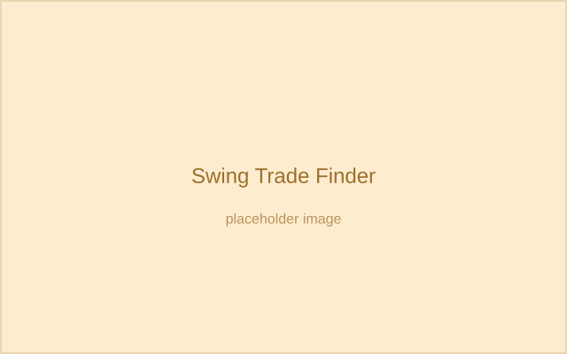
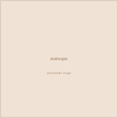
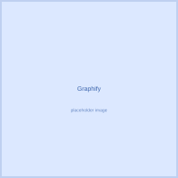

Projects

DT Terminal
A live trading terminal dashboard I built and deployed – real-time data, a clean UI, and a good excuse to practice building something people can actually use.

Swing Trade Finder
github.com/DhruvTilva/swing_trade_finder
An end-to-end machine learning pipeline that takes years of stock price data, engineers features like moving averages and RSI, and trains a Random Forest model to estimate how likely a swing trade setup is to work out.
Open Source Contributions

Merged PR into Anthropic's Claude Cookbooks
Claude Cookbooks is where a lot of developers learn to build with LLMs – RAG pipelines, contextual embeddings, agent workflows. I found that the contextual-embeddings example was adding context after the text chunk instead of before it, which defeats the point of giving the model context first.
I fixed the ordering and the maintainers merged it in – a small fix, but one that every developer who follows that guide now benefits from.

Merged two fixes into Graphify (70k+ stars)
Graphify is an AI system that uses LLMs to analyze codebases and build a structured knowledge graph out of them. I found two bugs: a secondary LLM call path that ignored the configured timeout, and a missing config file that crashed the app with a raw stack trace instead of a clear error.
Both fixes were reviewed and merged by the maintainers.